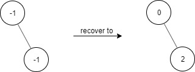
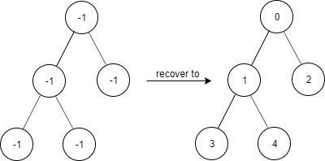
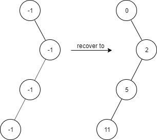

1261. 在受污染的二叉树中查找元素
恢复时父值确定则孩子值必被规则唯一确定，DFS 一遍写回；find 用 target+1 的二进制位直接下行（0 左 1 右）。
思路
- 污染只毁了值、没毁结构：根必是
0，父结点值为x时左孩子必是2x+1、右孩子必是2x+2，DFS 一遍即可恢复。 find不需要哈希集合：target+1的二进制去掉最高位后，0对应走左、1对应走右，正好是根到 target 的路径。- 沿位下行遇到空结点就是不存在；
target=0时一位都不用走（根就是 0）。
图解
最优解
1class FindElements {2 private final TreeNode root;3 4 public FindElements(TreeNode root) {5 this.root = root;6 if (root != null) recover(root, 0); // 根必为 0，一路往下推7 }8 9 // 父结点的值确定后，左右孩子的值就被规则唯一确定，直接写回10 private void recover(TreeNode node, int val) {11 node.val = val;12 if (node.left != null) recover(node.left, 2 * val + 1);13 if (node.right != null) recover(node.right, 2 * val + 2);14 }15 16 public boolean find(int target) {17 TreeNode cur = root;18 // target+1 的二进制去掉最高位后，0 走左、1 走右，正好是根到 target 的路径19 for (int bit = Integer.highestOneBit(target + 1) >> 1; bit > 0 && cur != null; bit >>= 1)20 cur = (target + 1 & bit) == 0 ? cur.left : cur.right;21 return cur != null;22 }23}题目
给出一个满足下述规则的二叉树：
root.val == 0- 对于任意
treeNode：- 如果
treeNode.val为x且treeNode.left != null，那么treeNode.left.val == 2 * x + 1 - 如果
treeNode.val为x且treeNode.right != null，那么treeNode.right.val == 2 * x + 2
- 如果
现在这个二叉树受到「污染」，所有的 treeNode.val 都变成了 -1。
请你先还原二叉树，然后实现 FindElements 类：
FindElements(TreeNode* root)用受污染的二叉树初始化对象，你需要先把它还原。bool find(int target)判断目标值target是否存在于还原后的二叉树中并返回结果。
示例 1：

输入： ["FindElements","find","find"] [[[-1,null,-1]],[1],[2]] 输出： [null,false,true] 解释： FindElements findElements = new FindElements([-1,null,-1]); findElements.find(1); // return False findElements.find(2); // return True
示例 2：

输入： ["FindElements","find","find","find"] [[[-1,-1,-1,-1,-1]],[1],[3],[5]] 输出： [null,true,true,false] 解释： FindElements findElements = new FindElements([-1,-1,-1,-1,-1]); findElements.find(1); // return True findElements.find(3); // return True findElements.find(5); // return False
示例 3：

输入： ["FindElements","find","find","find","find"] [[[-1,null,-1,-1,null,-1]],[2],[3],[4],[5]] 输出： [null,true,false,false,true] 解释： FindElements findElements = new FindElements([-1,null,-1,-1,null,-1]); findElements.find(2); // return True findElements.find(3); // return False findElements.find(4); // return False findElements.find(5); // return True
提示：
TreeNode.val == -1- 二叉树的高度不超过
20 - 节点的总数在
[1, 104]之间 - 调用
find()的总次数在[1, 104]之间 0 <= target <= 106
题面取自力扣当前版本。
数据快照 2026-11-04。题面版权归力扣所有，本站点仅供本人学习使用，请勿对外发布。